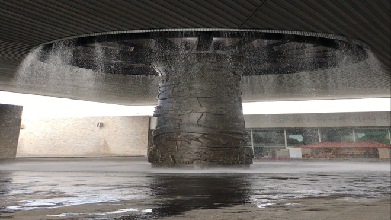
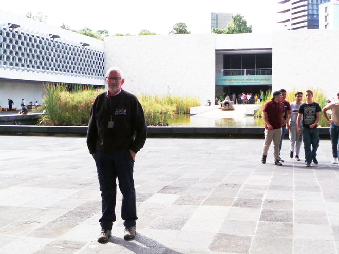
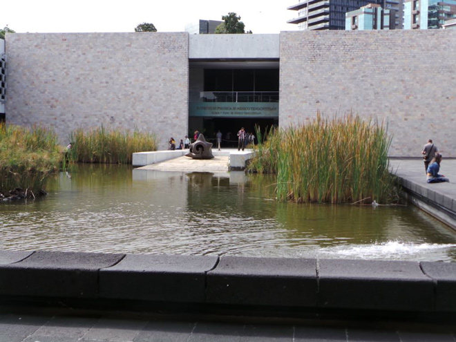
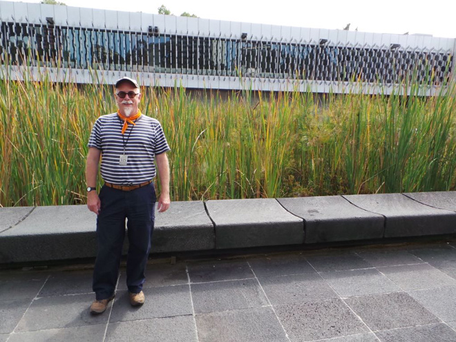
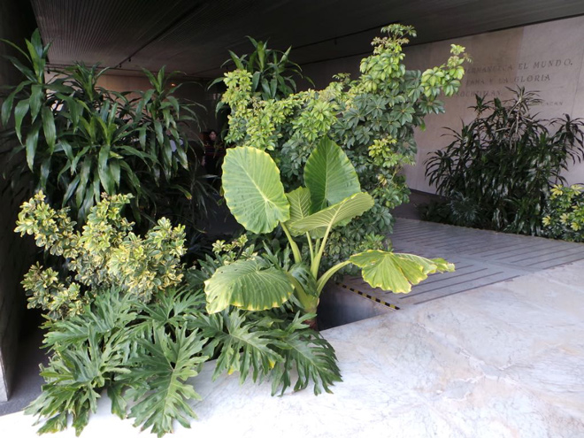
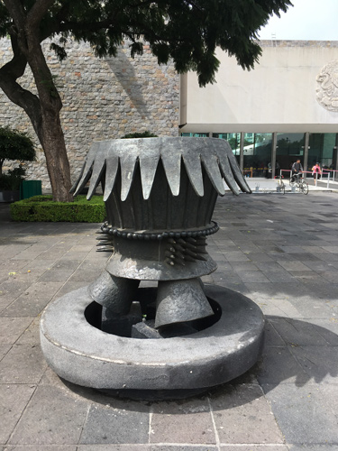
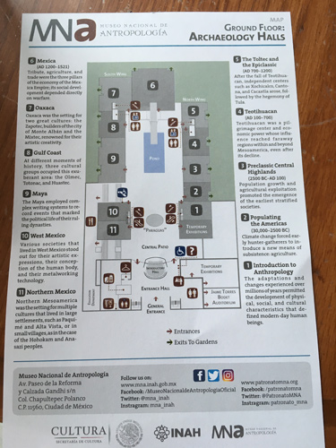
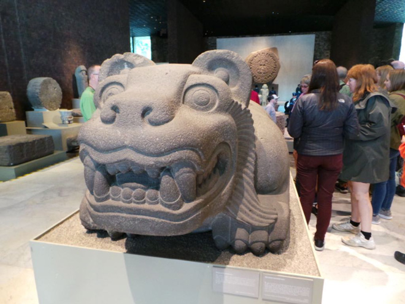
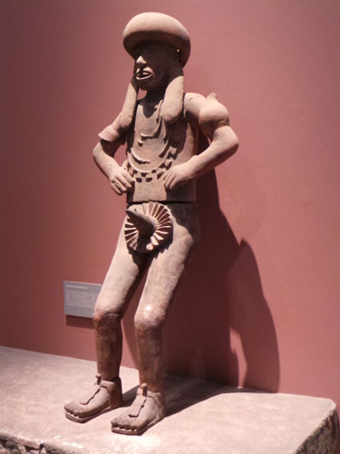
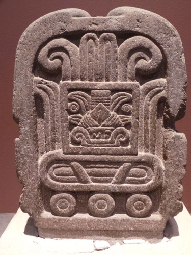
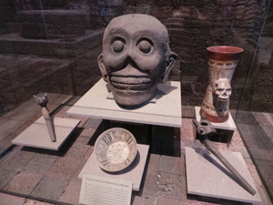
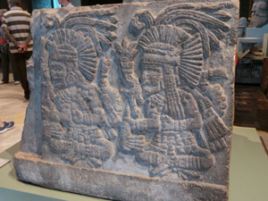
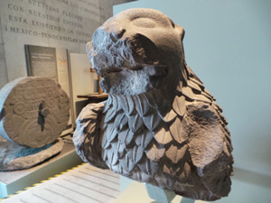
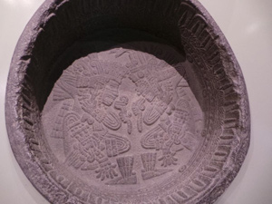
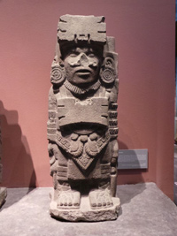
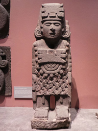
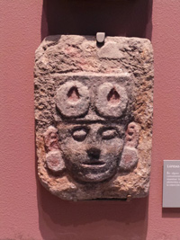
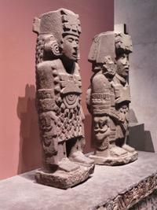
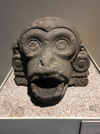
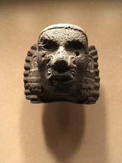
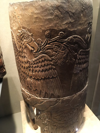
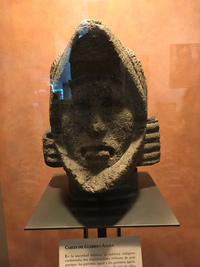
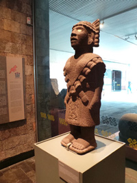
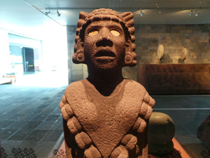
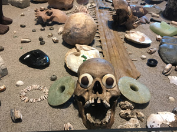
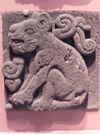
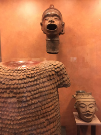
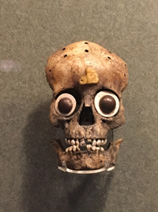
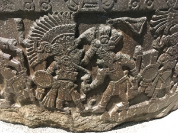
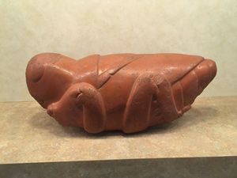
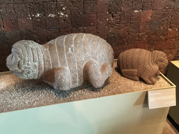
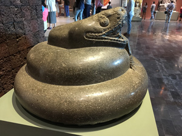
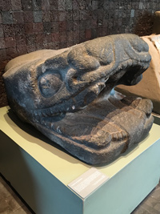
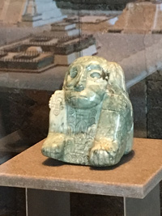
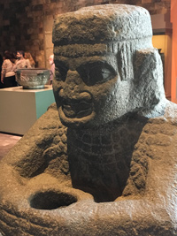
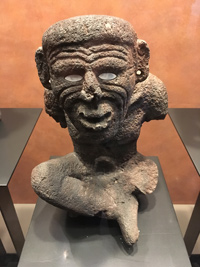
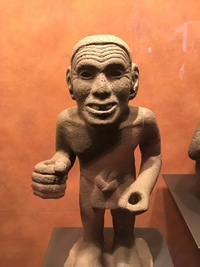
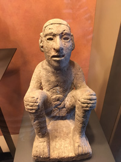
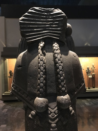
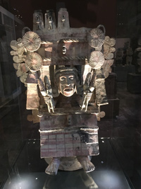
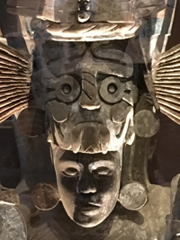
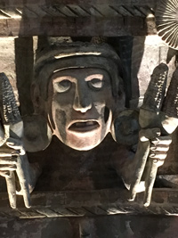
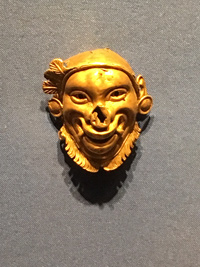
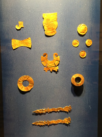
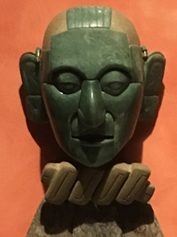
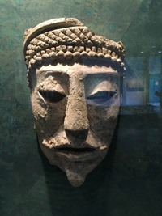
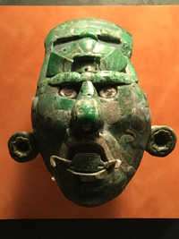
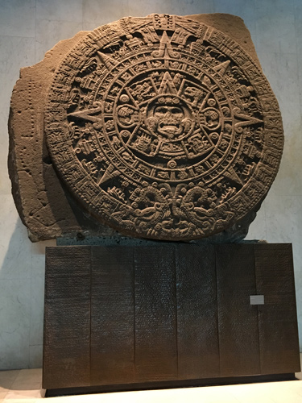
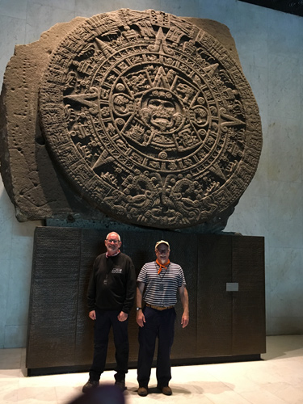
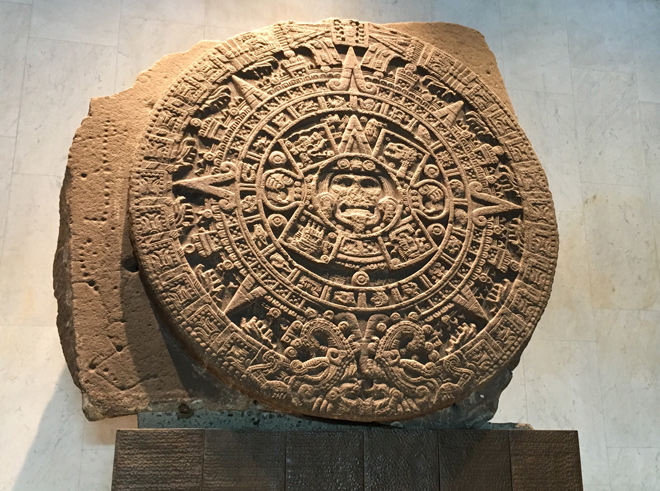
The sculpted motifs that cover the surface of the stone refer to central components of Aztec ideology such as the importance of violence and warfare, the cosmic cycles and the nature of the relationship between gods and man. The Aztec elite used this relationship with the cosmos and the bloodshed often associated with it to maintain control over the population.
In the centre of the monolith is believed to be the face of the solar deity, Tonatiuh, although some scholars have argued that the identity of the central face is of the earth monster, Tlaltecuhtli, or of a hybrid deity known as Yohualtecuhtli who is referred to as the "Lord of the Night." The central figure is shown holding a human heart in each of his clawed hands, and his tongue is represented by a stone sacrificial knife (Tecpatl).